Руководство по выживанию
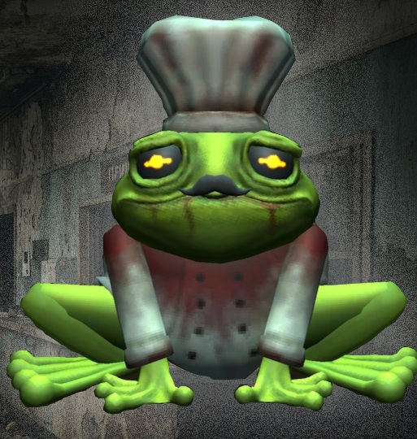
Зеленое, неуклюжее, относительно маленькое существо, похожее на лягушку в окровавленной поварской униформе.Как только Шеф заметит полубота, он издаст звук, подпрыгнет и, оказавшись достаточно близко к полуботу, начнет атаку.
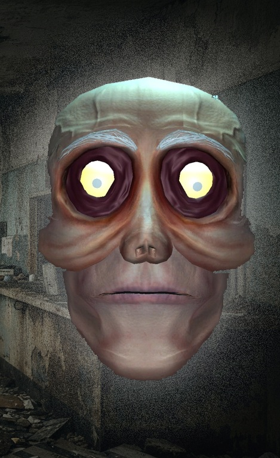
Это гигантская парящая голова без тела со светящимися желтыми глазами. Судя по седеющим волосам, белым бровям, морщинистому лицу и заметному облысению, это пожилой человек. На затылке у него хвост, а глаза глубоко запали. Бесцельно парит в воздухе, время от времени щелкает зубами.
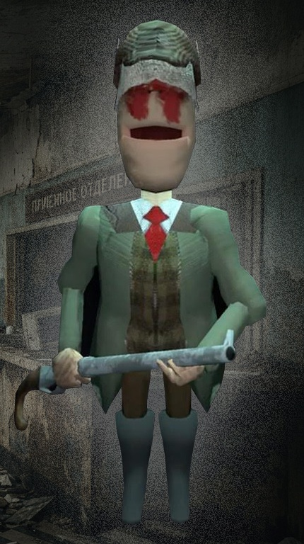
Бесцельно бродит вокруг, ориентируясь по звуку выстрелов. Иногда охотник издает гудящий звук, сигнализируя о своем присутствии. Обладая слухом, который в пять раз острее, чем у обычных монстров, охотник стреляет во все, что издает шум поблизости. Это касается ценных предметов, полуботов и даже других монстров.
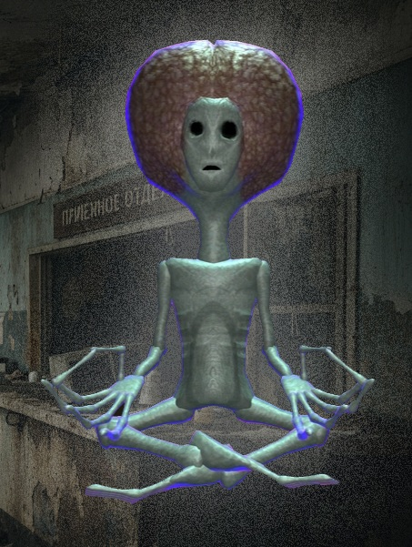
Менталист хаотично парит над уровнем, пока не заметит игрока. Как только он обнаружит игрока и окажется достаточно близко к нему, он начнет создавать вокруг себя сферу фиолетовой ауры, которая поднимет любого игрока, предмет или монстра небольшого размера, оказавшегося внутри. Через несколько секунд сфера ауры станет красной и больше не сможет ничего поднимать. Вскоре после этого Менталист с силой швырнет все, что поднял, на землю, нанося значительный физический урон.
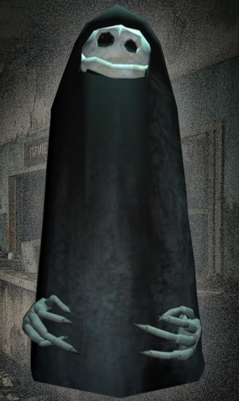
При преследовании Мантия движется к полуботу гораздо медленнее. Если полубот посмотрит на Мантию, она резко ускорится, при этом будет шипеть, поднимать руки, а экран полубота по краям потемнеет. Если полубот отвернется, Мантия снова начнет медленно приближаться.
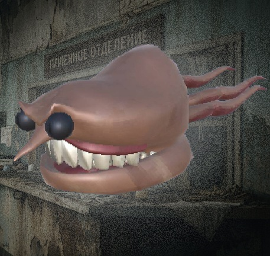
Это маленькое светло-коричневое существо с пятью короткими щупальцеобразными конечностями, торчащими из задней части тела. Его основная часть — тело/голова — похожа на набор зубных протезов со швом, который четко разделяет верхнюю и нижнюю челюсти. Большой прикус Скиркера обнажает красноватые верхние десны и острые белые зубы, которые постоянно видны. Когда рот Spewer открывается, можно увидеть два костных выступа на верхней челюсти, соединенных с нижней челюстью. Кроме того, у него кривой конусообразный нос и два глаза с черными склерами и ярко-красными угловатыми зрачками.
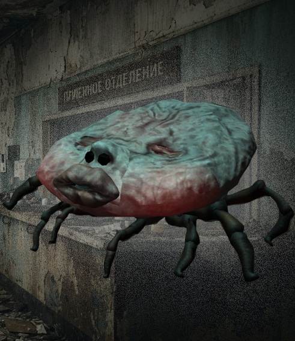
Это плоский бежевый жучок, внешне напоминающий настоящих клещей. Его тело бежевого цвета покрыто множеством пор, а щеки и спина — бледно-розовым румянцем. У него простая мордочка с толстыми лососевыми губами, слегка приоткрытыми, и двумя черными точками-глазами. Под телом находятся четыре коричнево-черные лапки, похожие на лапки насекомых, с помощью которых он передвигается.
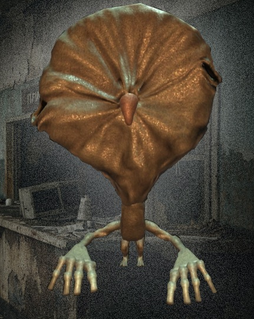
Гамбит выглядит как гуманоидное существо среднего размера с маленьким телом. Голова Гамбита комично большая, на лице у него маленькие, глубоко посаженные черные глаза, а посередине лица — язык, который постоянно высовывается. У него длинные руки, маленькие ноги и ступни, а также небольшая попа.
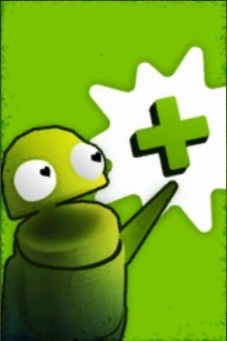
Улучшение здоровья увеличит запас здоровья вашего полуробота на 20 очков. Это позволит вам выдерживать больше атак и жить дольше.
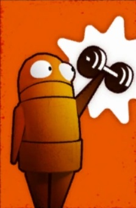
Улучшение силы увеличивает силу захвата вашего полуробота на 1 единицу. Это значительно упрощает переноску, перемещение и броски ценных предметов и позволяет поднимать монстров с определенным запасом силы.
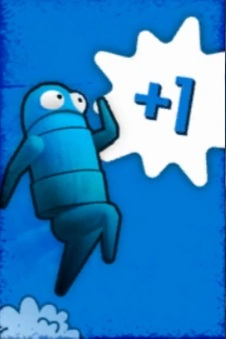
Улучшение «Дополнительный прыжок» позволит вашему полуроботу совершить дополнительный прыжок в воздухе. Это можно использовать, чтобы перепрыгивать большие промежутки, забираться на возвышенности или избежать урона от падения.
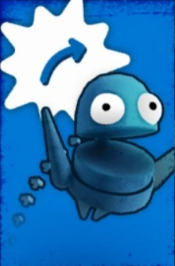
Улучшение «Кувырок» увеличивает скорость и дальность вашего «Кувырка». Это позволяет повысить мобильность и эффективность в бою, но не увеличивает наносимый урон.
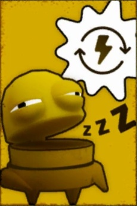
Улучшение «Отдых в приседе» увеличивает скорость восстановления выносливости в приседе на 1 единицу в секунду (или 0,5 единицы в секунду при движении). Это значительно повышает эффективность восстановления выносливости в приседе, укрытии или ползании.
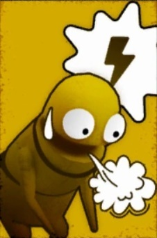
Улучшение скорости спринта увеличит скорость спринта вашего полуробота на 20% и снизит расход выносливости при спринте в секунду на 1. Это позволит вам с легкостью сокращать дистанцию и быстрее убегать от монстров.
Человечество практически вымерло из-за «Болезни Полыни». Немногие выжившие, вероятно, обладали иммунитетом, но мутировали в монстров из-за побочных эффектов воздействия льда. Станция McJannek, по-видимому, была центром изучения болезни, но эксперименты вышли из-под контроля.
Происхождение: ТаксменТаксмен — разумный ИИ, представленный в виде плачущего смайлика с плотью под маской. Он общается с игроками исключительно с помощью эмодзи. Таксмен, скорее всего, является экспериментом датского правительства, получившим разум в начале эпидемии. Это объясняет его огромные ресурсы, необходимые для производства полуботов и техники.
Мотивация:Неясно, зачем Таксмен посылает полуботов за ценностями, учитывая его неограниченные ресурсы. Возможно, это просто способ развлечься в постапокалиптическом мире, используя полуботов как пешек в своей игре.